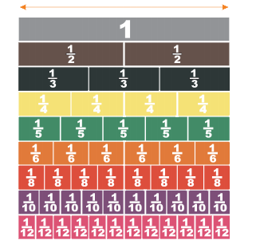
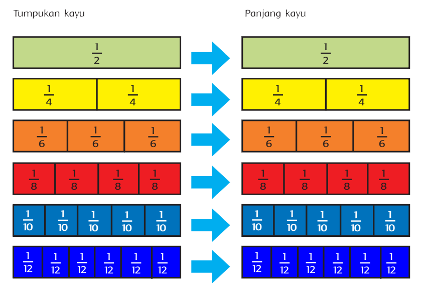
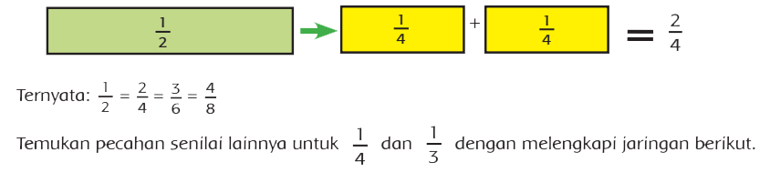
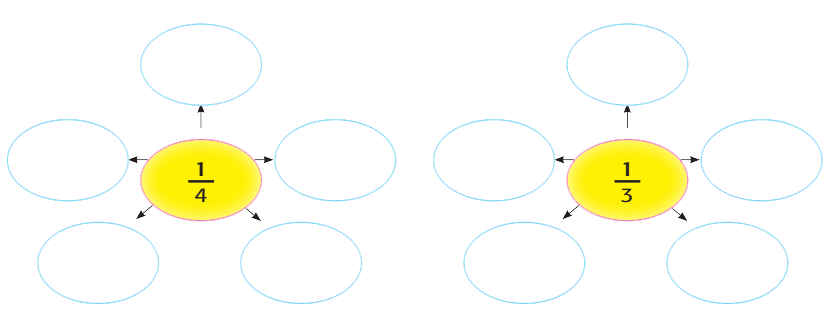

Pecahan Senilai
Burung-burung yang berkunjung dan bermain di pohon-pohon belakang rumah Edo semakin banyak. Edo berencana membuat rumah singgah burung di atas salah satu pohon. Edo meminta bantuan ayah untuk membuat rumah tersebut. Edo mendapat tugas dari ayahnya memotong kayu dan hasilnya adalah sebagai berikut.

Semua kayu telah terpotong sesuai ukuran di atas. Sebelum merakitnya menjadi rumah singgah burung, Ayah meminta Edo mengelompokkan potongan-potongan kayu yang sama panjangnya dengan 1/2. Hal ini bertujuan untuk memudahkan melakukan perakitan. Bantulah Edo mengelompokkannya dengan melengkapi diagram. Sebelumnya perhatikan pecahan senilai berikut.
Contoh :
Pecahan Senilai Untuk
 